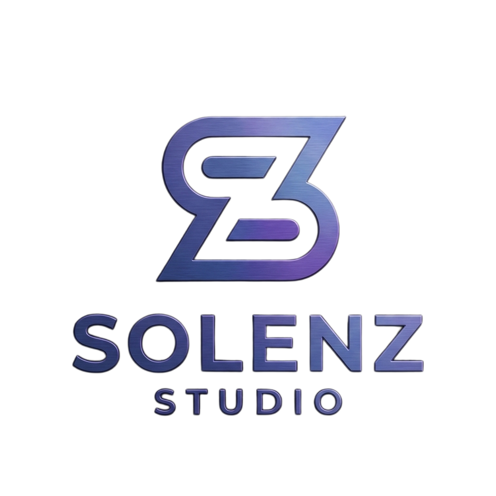

Yenilikçi kodlar, yaratıcı tasarımlar ve sınırları zorlayan dijital deneyimler geliştiriyoruz.
Solenz Studio, yazılım ve oyun dünyasına yeni bir soluk getirmek amacıyla Şenol ve Sudenaz tarafından kurulan bağımsız bir geliştirici stüdyosudur.
Mobil oyunlardan yapay zeka destekli müzik araçlarına, detaylı işletme simülasyonlarından günlük hayatı kolaylaştıran uygulamalara kadar geniş bir yelpazede projeler üretiyoruz. Amacımız sadece kod yazmak değil, insanların telefonlarında severek tutacağı, yüksek kaliteli dijital dünyalar inşa etmektir.
Google Play Store onayımızı aldık! İlk resmi mobil oyunumuzun kodlama ve tasarım aşamaları tüm hızıyla devam ediyor. Çok yakında buradan indirebileceksiniz.
Google Play'de Gör (Yakında)Üretken yapay zeka (GenAI) ve makine öğrenimi algoritmalarını mobil ekosisteme entegre edebilecek altyapılar geliştiriyoruz. Akıllı asistanlardan, karmaşık verileri işleyen otomasyon araçlarına kadar sınırları zorluyoruz.
Basit mekaniklerin ötesine geçerek; karmaşık fizik motorları, derin ekonomi sistemleri ve sürükleyici hikayeler barındıran, yüksek ölçekli ve çok oyunculu (multiplayer) mobil oyun projeleri için AR-GE yapıyoruz.
Sadece son kullanıcıya yönelik eğlence uygulamaları değil; yüksek veri trafiğini kaldırabilen, modern UI/UX standartlarına sahip, güvenli ve günlük hayatı dijitalleştiren ölçeklenebilir yazılım çözümleri inşa ediyoruz.